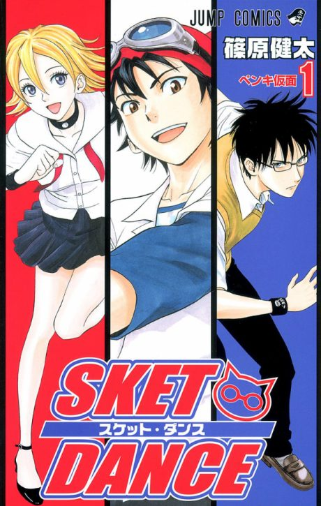

SKET Dance
SKET DANCE
Three students run a club that helps their classmates with all sorts of problems.
After the anime, read the manga from Chapter 183.
7.8AniList score
—Animeter, no votes yet
77episodes
Rate it or report where you stopped
Anime finished. Where does the manga pick up?
Start at Chapter183
The 77-episode anime ends at chapter 182 (Volume 21), so start at chapter 183. The OVA adapts chapters 198-200, which the TV series skipped. The manga is finished at 288 chapters.
1182288 end
Season 1Start reading here